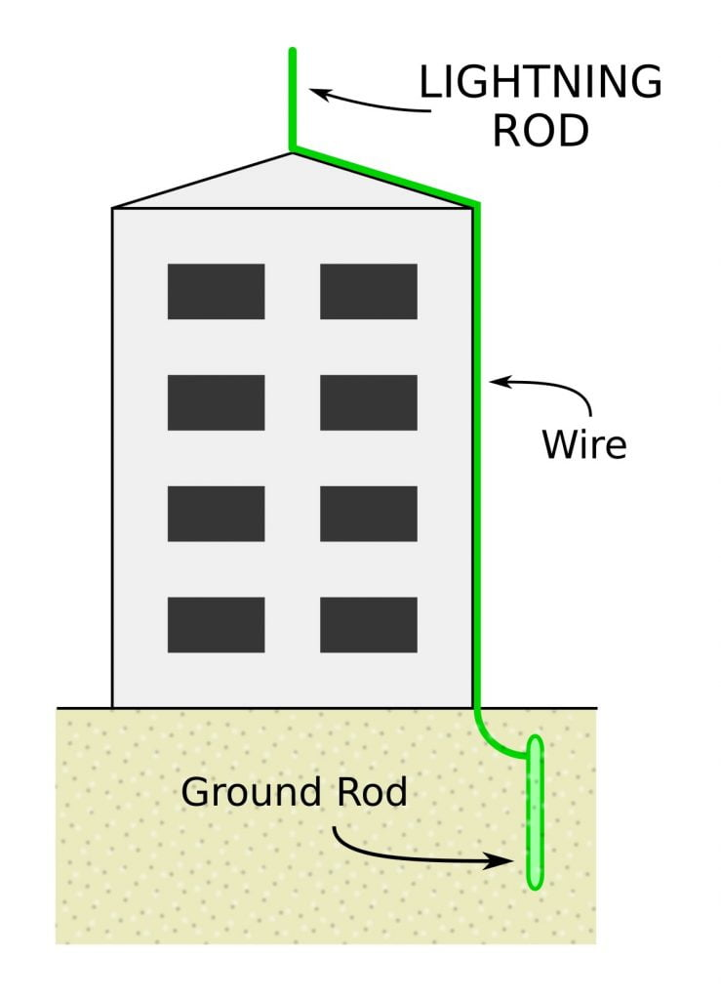

မိုးကြိုးလွှဲကို ဘင်ဂျမင် ဖရန်ကလင် က စတင် တီထွင်ခဲ့တယ်လို့ ဆိုပါတယ်။ မိုးကြိုးလွှဲ ဆိုတာ တကယ်ကတော့ ဘာမှ ထူးထူး ဆန်းဆန်း မဟုတ်ပါဘူး။ အဆောက် အဦ အမြင့်တွေရဲ့ ထိပ်မှာ တပ်ဆင်ထားတဲ့ သန်ချွန်တွေပါ။ ဒီ သံချွန် တွေက တစ်လက်မလောက် လုံးပတ်ရှိပြီး ကြေးနီ (copper) သို့ အလူမီနီယံ (Aluminium) နန်းကြိုး တုတ်တုတ်ကြီး နဲ့ ဆက်ထားပါတယ်။ ဒီ နန်းကြိုရဲ့ အခြား တဖက်ကိုတော့ မြေကြီးထဲမှာ ထည့်မြှုပ်ထားပါတယ်။
မိုးကြိုးလွှဲ တပ်ဆင်ရတဲ့ ရည်ရွယ်ချက်နဲ့ လုပ်ကိုင်ပုံနဲ့ ပါတ်သက်လို့ လူအချို့က ဒီ မိုးကြိုးလွှဲတွေဟာ လျှပ်စီး မိုးကြိုး တွေကို ဆွဲဆောင်နေတယ် လို့ ယူဆကြပါတယ်။ သူတို့ ထင်တာက မိုးကြိုးလွှဲ တွေဟာ ကောင်းကင်မှ မိုးကြိုး လျှပ်စီး တွေကို ဆွဲဆောင်နေတဲ့ အတွက် မိုးကြိုးလျှပ်စီးတွေဟာ အခြားနေရာကို မပစ်တော့ပဲ မိုးကြိုးလွှဲ ရှိရာဆီကို ပစ်ချလိုက်တာလို့ ထင်ကြတာပါ။ ဒီယူဆချက်က မမှန်ပါဘူး။
မိုးကြိုးလွှဲရဲ့ အဓိက အလုပ်လုပ် ပုံကို မပြောခင် မိုးကြိုး လျှပ်စီး ဘယ်လို ဖြစ်လာသလဲ ဆိုတာလေး အကြမ်းဖြင်း ကြည့်လိုက်ရအောင်ပါ။
ကောင်းကင်မှာ မိုးတိမ်တွေ ဖြစ်လာတဲ့ အခါမှာ ဒီ မိုးတိမ် တွေရဲ့ အောက်ခြေတွေမှာ ရေငွေ့တွေရဲ့ လှုပ်ရှားမှုကြောင် အနှုတ် ဆောင်တဲ့ လျှပ်စစ် အမဓါတ်တွေ စုလာပါတယ် (ရှားရှား ပါးပါး အဖိုဓါတ် စုလာတာမျိုးလဲ ရှိတတ်ပါတယ်။) ဒီ အမဓါတ် တွေဟာ အင်အား ကောင်းလာတော့ မြေပြင်ပေါ်ကို လှေခါးထစ်တွေ ပုံစံနဲ့ ခုန်ဆင်း လာကြပါတယ် (ဒါ့ကြောင့် မိုးကြိုးပစ်ရင် လှေကားထက်ကို အထစ်ထစ် မြင်ရတာပါ)။
ဒီလို ဆင်းလာရာက မြေပြင်နားကို ရောက်တဲ့ အခါ ဒီ အမဓါတ် တွေရဲ့ ဆွဲဆောင်မှုကြောင့် မြေပြင်မှာ ရှိတဲ့ အရာဝတ္ထု တွေကနေ အဖိုဓါတ်တွေ ကောင်းကင်ကို ခုန်တက်ပြီး ဆင်းလာတဲ့ အမဓါတ်တွေကို ကြိုဆိုကြပါတယ်။ ဒီလို အဖိုဓါတ်တွေ ခုန်တက်ပြီး ကြိုဆိုနိုင်တဲ့ အရာ ဝတ္ထုတွေဟာ မြေပြင်ပေါ်က လူ အပါအဝင် အဆောက်အဦတွေ၊ သစ်ပင်တွေ အရာ အားလုံး ပြလုပ်နိုင်ပါတယ်။
ကောင်းကင်က ခုန်ဆင်းလာတဲ့ အမဓါတ် နဲ့ မြေပြင်က ခုန်တက်ကြိုဆိုတဲ့ အဖိုဓါတ်တို့ တွေ့ဆုံမိတဲ့ အခါ လျှပ်စီး စီးဆင်းဖို့ လမ်းကြောင်း တစ်ခု ဖြစ်သွားပါတယ်။ ဒီအခါ တိမ်တိုက်အောက်ခြေမှာ စုဝေးနေတဲ့ အမဓါတ် တွေဟာ အခု ဖြစ်သွားတဲ့ လမ်းကြောင်းအတိုင်း လိုက်ပြီး တပျော်တပါးကြီး စုပြုံ ဆင်းလာ ကြပါတော့တယ်။ ဒီအခါမှာ လျှပ်စီး မိုးကြိုး ပစ်တယ် ဆိုပြီး ဖြစ်လာတာ ဖြစ်ပါတယ်။
မိုးကြိုးလွှဲ တွေဟာ ကောင်းကင်က မြေပြင်ကို စီးဆင်းလာတဲ့ လျှပ်စီးကြောင်း မြေကြီးထဲကို စီးဝင်သွားဖို့ ခုခံအား အနည်းဆုံး (စီးဆင်းဖို့ အလွယ်ကူဆုံး) လမ်းကြောင်းကို ဖန်တီးပေး တာပါ။ ဒီနည်းအားဖြင့် မိုးကြိုးလွှဲ တပ်ဆင် ထားတဲ့ အဆောက်အဦကို မိုးကြိုး ပစ်ချခဲ့ရင် မြောက်များလှ စွာသော လျှပ်စစ်ဓါတ် တွေဟာ ခုခံအား အနည်းဆုံး ဖြစ်တဲ့ ဒီ မိုးကြိုးလွှဲက နေတဆင့် မြေကြီးထဲကို စီးဆင်း သွားပါတယ်။ ဒီနည်းအားဖြင့် လျှပ်စီးဟာ အဆောက်အဦ နဲ့ အတွင်းက လူတွေကို ထိခိုက်မှု မရှိတော့ပဲ အန္တရာယ် မဖြစ်စေတော့တာ ဖြစ်ပါတယ်။

မိုးကြိုးရဲ့ ဂုဏ် သတ္တိ တစ်ခုကတော့ မြေပြင်ကို ပစ်လိုက်ပြီးရင် ခုန်နိုင်တာပဲ ဖြစ်ပါတယ်။ မိုးကြိုးဟာ မြေပြင်က အရာ ဝတ္ထု တစ်ခုခုကို ပစ်လိုက်ပြီးရင် မြေကြီးထဲကို စီးဝင်သွားဖို့ ခုခံအား အနည်းဆုံး လမ်းကြောင်းကို ရှာဖွေပါတယ်။ ဒီလို ရှာဖွေရာမှာ လျှပ်စီးကြောင်းတွေဟာ အနီးပါတ်ဝန်းကျင်က အရာဝတ္ထုတွေ ဆီကို ခုန်ပျံ ရောက်ရှိ သွားနိုင်ပါတယ် (ဒါကို မိုးကြိုး စက်ကွင်းထဲ ကျတယ် ဆိုပြီး အရပ်ထဲမှာ ပြောကြတာပါ။)
အကယ်လို့ မိုးကြိုးလွှဲ တပ်ဆင်ထားတဲ့ အဆောက်အဦကို မိုးကြိုး တိုက်ရိုက် ထိမှန်ခြင်း မရှိဘူး ဆိုရင်တောင် အနီးအနားက အဆောက်အဦ၊ သစ်ပင် တစ်ခုခုကို မိုးကြိုး ပစ်ခဲ့ရင်လဲ ဒီ မိုးကြိုးလွှဲက မိုးကြိုးရဲ့ လျှပ်စစ် စီးဆင်းသွားဖို့ ခုခံအား အနည်းဆုံး လမ်းကြောင်း ဖြစ်နေတာမို့ မိုးကြိုးဟာ ဒီ မိုးကြိုးလွှဲဆီ ခုန်ကူး လာမှာ ဖြစ်ပါတယ်။
ဒီ နည်းအားဖြင့်လဲ မိုးကြိုးလွှဲ တွေဟာ အနီးအနားက အရာ ဝတ္ထုတွေကို မိုးကြိုး ပစ်ခဲ့ရင်တောင် ဒီ စီးဆင်းလာတဲ့ လျှပ်စစ် တွေကို လမ်းကြောင်း လွှဲယူ လိုက်တာမို့ မိုးကြိုး ပစ်ခံရတဲ့ အရာဝတ္ထုကို ထိခိုက်မှု နည်းပါးအောင် ကာကွယ်ပေးမှာ ဖြစ်ပါတယ်။
ဒီ မိုးကြိုးလွှဲ အလုပ်လုပ်ပုံကို ကြည့်ရင် မိုးကြိုးလွှဲဟာ မိုးကြိုးတွေကို ဆွဲဆောင်နေတာ မဟုတ်ဘူး ဆိုတာ မြင်နိုင်ပါတယ်။ ဒီ့အစား မြေပြင်ကို ပစ်ချလိုက်တဲ့ မိုးကြိုးအတွက် မြေကြီးထဲကို အန္တရာယ် ကင်းကင်းနဲ့ စီးဆင်း သွားနိုင်ဖို့ လမ်းကြောင်း တစ်ခုကို ဖန်တီးပေး တာပဲ ဖြစ်ပါတယ်။
နောက်ပြီး မိုးကြိုးလွှဲ တွေဟာ မိုးကြိုးတွေ အပစ် မခံရအောင်လဲ မကာကွယ် ပေးနိုင်ပါဘူး။ မိုးကြိုးလွှဲ တပ်ဆင်ထားတဲ့ အဆောက်အဦနဲ့ အနီးတဝိုက်ကို ပစ်မယ့် မိုးကြိုးက မိုးကြိုးလွှဲ ရှိသည် ဖြစ်စေ၊ မရှိသည် ဖြစ်စေ ပစ်မှာပါပဲ။ ဒါပေမယ့် မိုးကြိုးလွှဲ တပ်ဆင်ထားခြင်း အားဖြင့် ပစ်လိုက်တဲ့ မိုးကြိုးလျှပ်စီးဟာ မိုးကြိုးလွှဲက တဆင့် မြေကြီးထဲ စီးဆင်း သွားမှာမို့ လူနဲ့ အဆောက်အဦတွေ ကို ထိခိုက်မှု မရှိနိုင် တော့ပါဘူး။
ဒီနေရာမှာ မိုးကြိုးလွှဲ တပ်ဆင်ရာမှာ သတိပြုရမယ့် အချက်လေးတွေ ရှိပါတယ်။ မိုးကြိုးလွှဲကို ပတ်ဝန်းကျင်က အမြင့်ဆုံး အဆောက်အဦထက် ပိုမြင့်အောင် တပ်ဆင်ဖို့ လိုပါတယ်။ ဒါမှလဲ ကောင်းကင်က ဆင်းလာတဲ့ အမဓါတ် တွေဟာ အမြင့်ဆုံး ဖြစ်တဲ့ မိုးကြိုးလွှဲနဲ့ အရင်ဆုံး စတွေ့မှာ ဖြစ်ပါတယ်။
မိုးကြိုးလွှဲ တွေဟာ ကောင်းကင်မှာ အမဓါတ်တွေ များလာရင် မြေပြင်ကနေ အဖိုဓါတ်တွေ တဖြည်းဖြည်း လွင့်ပျံ စေခြင်းဖြင့် ကောင်းကင်က အမဓါတ် တွေကို ဓါတ်ပြယ် သွားစေခြင်း အားဖြင့် မိုးကြိုး မပစ်အောင် ကာကွယ် ပေးနိုင်လိမ့်မယ်လို့ အချို့က ယူဆ ကြပါတယ်။ ဒါပေမယ့် မိုးကြိုးလွှဲတွေကို လေ့လာတဲ့သုတေသန တွေအရတော့ ဒီ အယူအဆဟာ မှန်ကန်မှု မရှိဘူးလို့ ဆိုပါတယ်။
သုတေသန တွေ့ရှိချက်တွေ အရ မိုးကြိုးလွှဲ တွေဟာ ပစ်ချလိုက်တဲ့ မိုးကြိုး လျှပ်စီး မြေပြင်ထဲ စီးဝင်ဖို့ လမ်းကြောင်း ဖန်တီးပေးခြင်းဖြင့် ကာကွယ်ပေးတာ ဖြစ်ပြီး ပစ်မယ့် မိုးကြိုးကိုတော့ မပစ်အောက် ကာကွယ်မှု မပြုနိုင်ဘူးလို့ ဆိုပါတယ်။
— မောင်သူရ (သိပ္ပံ) —
Reference: How Lightning Works | How Stuff Works